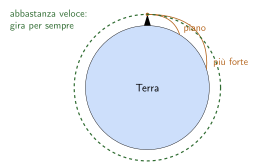
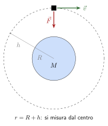
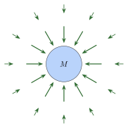
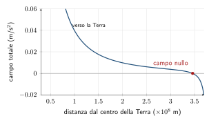

- ricavare da solo la velocità \(v=\sqrt{GM/r}\) e il periodo di un satellite in orbita circolare;
- ritrovare la terza legge di Keplero dalla legge di Newton e usarla per misurare la massa di un pianeta;
- spiegare i satelliti geostazionari e l’“assenza di peso”;
- calcolare il campo gravitazionale di una o più masse.
1Satelliti in orbita circolare

Un cannone in cima a una montagna altissima spara in orizzontale. Se spara piano, la palla cade vicino. Se spara più forte, cade più lontano. Ma la Terra è rotonda: se spari abbastanza forte, mentre la palla cade la superficie sotto di lei si abbassa altrettanto. La palla cade per sempre senza toccare terra. È diventata un satellite.

Ricaviamo la velocità del satellite in tre passi.
- Sul satellite agisce una sola forza: la gravità della Terra, \(F=G\dfrac{Mm}{r^2}\).
- Il satellite fa un moto circolare uniforme, quindi serve una forza centripeta \(F_c=m\dfrac{v^2}{r}\).
- È la gravità a fare da forza centripeta, quindi le due sono uguali:
- \(v\) non dipende dalla massa \(m\) del satellite;
- più il satellite è lontano, più è lento;
- \(r\) si misura dal centro del pianeta: \(r=R+h\).
Un corpo che percorre una circonferenza di raggio \(r\) in un tempo \(T\) (il periodo) ha:
\[ v=\frac{2\pi r}{T}\qquad \omega=\frac{2\pi}{T}\qquad a_c=\frac{v^2}{r}=\omega^2r=\frac{4\pi^2r}{T^2} \]L’accelerazione centripeta punta sempre verso il centro. Ricorda di esprimere \(T\) in secondi: 1 h = 3600 s, 1 d = 86 400 s.
Periodo e terza legge. Mettiamo \(v=2\pi r/T\) nell’uguaglianza \(v^2=GM/r\):
La costante di Keplero vale \(4\pi^2/(GM)\): dipende solo dalla massa del corpo centrale. Misurando \(T\) e \(r\) di un satellite si trova la massa del pianeta.
Keplero aveva trovato la sua terza legge guardando il cielo per anni. Newton la ricava in tre righe dalla sua formula. E si capisce anche perché la costante delle lune di Giove è diversa: dipende dalla massa del corpo attorno a cui si gira.
| Oggetto | quota | velocità | periodo |
|---|---|---|---|
| Stazione spaziale (ISS) | 400 km | 7,7 km/s | 92 min |
| Satelliti GPS | 20 200 km | 3,9 km/s | 12 h |
| Geostazionari | 35 800 km | 3,1 km/s | 24 h |
| Luna | ≈ 380 000 km | 1,0 km/s | 27,3 d |
La ISS compie un giro della Terra in 92,7 minuti. A che quota si trova?
- \(T=92{,}7\cdot60=5{,}56\cdot10^3\) s.
- \(r=\sqrt[3]{\dfrac{GM_T\,T^2}{4\pi^2}}=\sqrt[3]{\dfrac{3{,}98\cdot10^{14}\cdot(5{,}56\cdot10^3)^2}{4\pi^2}}=6{,}78\cdot10^6\) m.
- \(h=r-R_T=6780-6370\approx410\) km.
La ISS fa circa 16 giri al giorno: gli astronauti vedono 16 albe.
Un satellite di 10 tonnellate e uno di 1 kg sono sulla stessa orbita. Chi va più veloce?
Risposta
Vanno alla stessa velocità: \(v=\sqrt{GM/r}\) non contiene la massa del satellite.2Satelliti geostazionari e GPS
Un satellite geostazionario sembra fermo nel cielo: resta sempre sopra lo stesso punto dell’Equatore. Non è fermo, ma gira con la stessa velocità angolare della Terra. Per questo l’antenna parabolica sul tetto può restare puntata sempre nello stesso punto.
Le condizioni sono tre:
- periodo uguale a una rotazione della Terra (giorno siderale, \(8{,}61\cdot10^4\) s ≈ 23 h 56 min);
- orbita circolare sopra l’Equatore;
- stesso verso di rotazione della Terra (da ovest verso est).
Il periodo è fissato, quindi per la terza legge è fissato anche il raggio: tutti i geostazionari stanno alla stessa quota, circa 35 800 km.
- \(r^3=\dfrac{GM_T\,T^2}{4\pi^2}=\dfrac{3{,}98\cdot10^{14}\cdot(8{,}61\cdot10^4)^2}{4\pi^2}=7{,}47\cdot10^{22}\) m³.
- \(r=\sqrt[3]{7{,}47\cdot10^{22}}=4{,}21\cdot10^7\) m.
- \(h=r-R_T=4{,}21\cdot10^7-0{,}637\cdot10^7=3{,}58\cdot10^7\) m \(\approx35\,800\) km.
Ogni satellite GPS trasmette l’ora esatta, misurata da un orologio atomico. Il ricevitore nel tuo telefono misura il ritardo \(\Delta t\) del segnale e calcola la distanza \(d=c\,\Delta t\). Essere a distanza \(d\) da un satellite vuol dire stare su una sfera. Le sfere di tre satelliti si incrociano in un solo punto: la tua posizione (un quarto satellite serve a correggere l’orologio del telefono).
3L’“assenza di peso”
“Gli astronauti galleggiano perché nello spazio non c’è gravità.” Falso. Alla quota della ISS, 400 km, \(g\) vale ancora 8,7 m/s², quasi come a terra.
Sei in ascensore, in piedi su una bilancia. Se il cavo si rompe, cadete tutti insieme con la stessa accelerazione \(g\): tu, la bilancia, l’ascensore. I tuoi piedi non premono più sulla bilancia, che segna 0. Ti senti senza peso, ma la gravità c’è eccome: è lei che vi fa cadere.
La stazione spaziale è un ascensore che cade per sempre, come la palla del cannone di Newton. Astronauti e stazione cadono insieme, quindi nulla preme su nulla.
Quello che segna la bilancia si chiama peso apparente: è la spinta del pavimento su di te. La forza di gravità \(mg\) c’è sempre; in caduta libera è il peso apparente a essere zero.
4Il campo gravitazionale
Come fa la Terra ad attirare la Luna senza toccarla, attraverso il vuoto? Newton stesso ammetteva di non saperlo. Nell’Ottocento nasce un’idea nuova: il campo.
Una massa “modifica” lo spazio intorno a sé. Ogni punto riceve una specie di etichetta che dice: se metti qui 1 kg, verrà tirato con questa forza, in questa direzione. Quell’etichetta è il campo gravitazionale. È come la mappa del vento del meteo: ogni città ha una freccia, anche se lì non c’è nessuna bandiera.
Il campo di una massa sferica è radiale e punta verso il centro. Sulla superficie terrestre vale proprio 9,81 N/kg.

Il campo è una proprietà del posto: qui vale 9,81 N/kg, chiunque ci sia. La forza dipende anche dall’oggetto: 100 kg sentono 981 N, 1 kg sente 9,81 N. E il campo in un punto è anche l’accelerazione con cui cadrebbe un oggetto lasciato lì: N/kg e m/s² sono la stessa unità.
Con più masse, i campi si sommano come vettori (principio di sovrapposizione). Se due campi stanno sulla stessa retta:
- stesso verso: i moduli si sommano;
- versi opposti: si sottraggono, e il campo totale punta come il più intenso.
Se sono perpendicolari, il modulo si trova con Pitagora: \(g=\sqrt{g_1^2+g_2^2}\).
Tra Terra e Luna il campo della Terra punta verso la Terra e quello della Luna verso la Luna. C’è un punto in cui si bilanciano e il campo totale è zero.

Terra e Luna distano \(d=3{,}84\cdot10^8\) m e \(M_L/M_T=0{,}0123\). A che distanza \(x\) dal centro della Terra il campo totale è nullo?
- I due campi sono opposti e si annullano se \(\dfrac{GM_T}{x^2}=\dfrac{GM_L}{(d-x)^2}\).
- Radice quadrata dei due membri: \(\dfrac{d-x}{x}=\sqrt{\dfrac{M_L}{M_T}}=\sqrt{0{,}0123}=0{,}111\).
- \(d=x(1+0{,}111)\Rightarrow x=\dfrac{3{,}84\cdot10^8}{1{,}111}=3{,}46\cdot10^8\) m.
Il punto è al 90% della strada verso la Luna.
5Esercizi
Dati: \(G=6{,}67\cdot10^{-11}\ \mathrm{N\,m^2/kg^2}\), \(M_T=5{,}97\cdot10^{24}\) kg, \(R_T=6{,}37\cdot10^6\) m, \(GM_T=3{,}98\cdot10^{14}\ \mathrm{m^3/s^2}\), \(g=9{,}81\) m/s². Altri dati nel formulario.
Un satellite meteorologico orbita a 800 km di quota su un’orbita circolare.
- Calcola la sua velocità.
- Quanti minuti impiega per un giro?
Risultato
\(v=7{,}45\) km/s; \(T=101\) min.Soluzione svolta
- \(r=R_T+h=6{,}37\cdot10^6+0{,}80\cdot10^6=7{,}17\cdot10^6\) m.
- \(v=\sqrt{\dfrac{GM_T}{r}}=\sqrt{\dfrac{3{,}98\cdot10^{14}}{7{,}17\cdot10^6}}=\sqrt{5{,}55\cdot10^7}=7{,}45\cdot10^3\) m/s.
- \(T=\dfrac{2\pi r}{v}=\dfrac{2\pi\cdot7{,}17\cdot10^6}{7{,}45\cdot10^3}=6{,}05\cdot10^3\) s \(=101\) min.
Phobos, la luna più grande di Marte, percorre un’orbita quasi circolare di raggio \(9{,}38\cdot10^6\) m in 7,65 ore.
- Calcola la massa di Marte.
Risultato
\(M=6{,}44\cdot10^{23}\) kg.Soluzione svolta
- \(T=7{,}65\cdot3600=2{,}75\cdot10^4\) s.
- Dalla terza legge: \(M=\dfrac{4\pi^2r^3}{GT^2}=\dfrac{4\pi^2\cdot(9{,}38\cdot10^6)^3}{6{,}67\cdot10^{-11}\cdot(2{,}754\cdot10^4)^2}\).
- Numeratore: \(39{,}5\cdot8{,}25\cdot10^{20}=3{,}26\cdot10^{22}\). Denominatore: \(6{,}67\cdot10^{-11}\cdot7{,}58\cdot10^8=5{,}06\cdot10^{-2}\).
- \(M=6{,}44\cdot10^{23}\) kg.
Il valore accettato è \(6{,}42\cdot10^{23}\) kg: è proprio così che si misurano le masse dei pianeti.
Un futuro satellite “areostazionario” deve restare sempre sopra lo stesso punto dell’equatore di Marte. Marte ha massa \(6{,}42\cdot10^{23}\) kg, raggio \(3{,}39\cdot10^6\) m e ruota su se stesso in \(8{,}862\cdot10^4\) s.
- A che quota dalla superficie di Marte deve orbitare?
Risultato
\(h=1{,}70\cdot10^4\) km (\(r=2{,}04\cdot10^7\) m).Soluzione svolta
- Il periodo dell’orbita deve essere uguale a quello di rotazione: \(T=8{,}862\cdot10^4\) s.
- \(r^3=\dfrac{GMT^2}{4\pi^2}=\dfrac{6{,}67\cdot10^{-11}\cdot6{,}42\cdot10^{23}\cdot(8{,}862\cdot10^4)^2}{4\pi^2}=8{,}52\cdot10^{21}\) m³.
- \(r=\sqrt[3]{8{,}52\cdot10^{21}}=2{,}04\cdot10^7\) m.
- \(h=r-R=2{,}04\cdot10^7-0{,}339\cdot10^7=1{,}70\cdot10^7\) m \(=1{,}70\cdot10^4\) km.
Molto più in basso dei geostazionari terrestri, perché Marte ha massa molto minore.
Un satellite viene spostato su un’orbita circolare di raggio quattro volte più grande.
- Come cambia la sua velocità?
- Come cambia il periodo?
Risultato
La velocità si dimezza; il periodo diventa 8 volte più lungo.Soluzione svolta
- \(v\propto\dfrac{1}{\sqrt r}\): con \(r\to4r\), \(v\to v/\sqrt4=v/2\).
- \(T\propto r^{3/2}\): con \(r\to4r\), \(T\to4^{3/2}\,T=8\,T\).
Verifica di coerenza: \(T=2\pi r/v\) cresce di \(4\) per il raggio e di \(2\) per la velocità dimezzata, \(4\cdot2=8\).
Un astronauta di 75 kg si trova sulla stazione spaziale, a 420 km di quota.
- Quanto vale lì il campo gravitazionale?
- Con che forza la Terra attira l’astronauta? Che percentuale del suo peso a terra è?
- Perché allora galleggia?
Risultato
\(g=8{,}63\) m/s²; \(F=647\) N, l’88% del peso a terra. Galleggia perché è in caduta libera insieme alla stazione.Soluzione svolta
- \(r=6{,}37\cdot10^6+0{,}42\cdot10^6=6{,}79\cdot10^6\) m.
- \(g=\dfrac{GM_T}{r^2}=\dfrac{3{,}98\cdot10^{14}}{(6{,}79\cdot10^6)^2}=8{,}63\) m/s².
- \(F=mg=75\cdot8{,}63=647\) N. A terra: \(75\cdot9{,}81=736\) N. Rapporto \(647/736=0{,}88\).
- La gravità c’è, ed è lei a fare da forza centripeta. Astronauta e stazione cadono insieme con la stessa accelerazione, quindi il pavimento non lo spinge: il peso apparente è zero.
Un razzo si trova a una quota pari a due raggi terrestri (\(h=2R_T\)).
- Quanto vale lì il campo gravitazionale?
Risultato
\(g=g_0/9=1{,}09\) m/s².Soluzione svolta
- Attenzione: la distanza dal centro è \(r=R_T+2R_T=3R_T\), non \(2R_T\).
- \(g=\dfrac{GM_T}{(3R_T)^2}=\dfrac{g_0}{9}=\dfrac{9{,}81}{9}=1{,}09\) m/s².
Lungo la congiungente Terra–Sole (distanza \(1{,}50\cdot10^{11}\) m) c’è un punto in cui il campo della Terra e quello del Sole si annullano. \(M_S=1{,}99\cdot10^{30}\) kg.
- A che distanza dal centro della Terra si trova?
- Confrontala con la distanza Terra–Luna (\(3{,}84\cdot10^8\) m).
Risultato
\(x=2{,}59\cdot10^8\) m dalla Terra, circa due terzi della distanza Terra–Luna.Soluzione svolta
- Con \(x\) distanza dalla Terra e \(d-x\) dal Sole: \(\dfrac{GM_T}{x^2}=\dfrac{GM_S}{(d-x)^2}\).
- Radice: \(\dfrac{x}{d-x}=\sqrt{\dfrac{M_T}{M_S}}=\sqrt{\dfrac{5{,}97\cdot10^{24}}{1{,}99\cdot10^{30}}}=1{,}732\cdot10^{-3}\).
- \(x=\dfrac{1{,}732\cdot10^{-3}}{1+1{,}732\cdot10^{-3}}\,d=1{,}729\cdot10^{-3}\cdot1{,}50\cdot10^{11}=2{,}59\cdot10^8\) m.
- \(2{,}59/3{,}84=0{,}68\): circa due terzi della distanza Terra–Luna.
Due sfere di piombo di 200 kg e 800 kg hanno i centri a 2,0 m di distanza.
- Calcola il campo gravitazionale totale nel punto medio tra le due sfere (modulo e verso).
- In che punto della congiungente il campo è nullo?
Risultato
\(4{,}0\cdot10^{-8}\) N/kg, verso la sfera da 800 kg; campo nullo a 0,67 m dalla sfera da 200 kg.Soluzione svolta
- Nel punto medio ciascuna sfera dista 1,0 m. \(g_1=\dfrac{6{,}67\cdot10^{-11}\cdot200}{1{,}0^2}=1{,}33\cdot10^{-8}\) N/kg verso la sfera piccola; \(g_2=\dfrac{6{,}67\cdot10^{-11}\cdot800}{1{,}0^2}=5{,}34\cdot10^{-8}\) N/kg verso quella grande.
- Versi opposti: \(g=g_2-g_1=4{,}0\cdot10^{-8}\) N/kg, verso la sfera da 800 kg.
- Campo nullo a distanza \(x\) dalla sfera piccola: \(\dfrac{200}{x^2}=\dfrac{800}{(2{,}0-x)^2}\Rightarrow\dfrac{2{,}0-x}{x}=\sqrt4=2\Rightarrow x=\dfrac{2{,}0}{3}=0{,}67\) m.
Il punto è più vicino alla massa più piccola, come era da aspettarsi.
Un pendolo sulla Terra oscilla con periodo 1,50 s. Lo stesso pendolo viene portato sulla Luna, dove \(g_L=1{,}62\) m/s².
- Quanto vale il periodo sulla Luna?
Risultato
\(T_L=3{,}69\) s.Soluzione svolta
- Periodo del pendolo: \(T=2\pi\sqrt{L/g}\). La lunghezza è la stessa, quindi \(T\propto1/\sqrt g\).
- \(T_L=T_T\sqrt{\dfrac{g_T}{g_L}}=1{,}50\cdot\sqrt{\dfrac{9{,}81}{1{,}62}}=1{,}50\cdot2{,}46=3{,}69\) s.
Al contrario: misurando il periodo di un pendolo si misura il campo gravitazionale di un pianeta.
I satelliti GPS compiono due giri della Terra in un giorno siderale, quindi hanno periodo \(T=4{,}308\cdot10^4\) s.
- Calcola il raggio dell’orbita e la quota.
- Calcola la velocità.
Risultato
\(r=2{,}66\cdot10^7\) m; \(h=2{,}02\cdot10^4\) km; \(v=3{,}87\) km/s.Soluzione svolta
- \(r^3=\dfrac{GM_TT^2}{4\pi^2}=\dfrac{3{,}98\cdot10^{14}\cdot(4{,}308\cdot10^4)^2}{4\pi^2}=1{,}87\cdot10^{22}\) m³, quindi \(r=2{,}66\cdot10^7\) m.
- \(h=r-R_T=2{,}66\cdot10^7-0{,}637\cdot10^7=2{,}02\cdot10^7\) m \(=2{,}02\cdot10^4\) km.
- \(v=\dfrac{2\pi r}{T}=\dfrac{2\pi\cdot2{,}655\cdot10^7}{4{,}308\cdot10^4}=3{,}87\cdot10^3\) m/s.
La Terra percorre attorno al Sole un’orbita quasi circolare di raggio \(1{,}50\cdot10^{11}\) m in un anno (\(3{,}156\cdot10^7\) s).
- Usando solo questi dati e \(G\), calcola la massa del Sole.
Risultato
\(M_S=2{,}01\cdot10^{30}\) kg.Soluzione svolta
- \(M_S=\dfrac{4\pi^2r^3}{GT^2}=\dfrac{4\pi^2\cdot(1{,}50\cdot10^{11})^3}{6{,}67\cdot10^{-11}\cdot(3{,}156\cdot10^7)^2}\).
- Numeratore: \(39{,}5\cdot3{,}375\cdot10^{33}=1{,}332\cdot10^{35}\). Denominatore: \(6{,}67\cdot10^{-11}\cdot9{,}96\cdot10^{14}=6{,}64\cdot10^4\).
- \(M_S=2{,}01\cdot10^{30}\) kg.
Abbiamo “pesato” il Sole senza andarci.
Un satellite ruota attorno a un pianeta di massa \(M\) e raggio \(R\) con velocità angolare \(\omega\).
- Dimostra che la sua quota è \(h=\sqrt[3]{\dfrac{GM}{\omega^2}}-R\).
Risultato
\(h=\sqrt[3]{GM/\omega^2}-R\).Soluzione svolta
- Forza centripeta scritta con \(\omega\): \(F_c=m\omega^2r\).
- \(G\dfrac{Mm}{r^2}=m\omega^2r\Rightarrow r^3=\dfrac{GM}{\omega^2}\Rightarrow r=\sqrt[3]{\dfrac{GM}{\omega^2}}\).
- \(h=r-R=\sqrt[3]{\dfrac{GM}{\omega^2}}-R\).
Un satellite di massa \(m\) percorre un’orbita circolare di raggio \(r\) attorno a un pianeta di massa \(M\).
- Dimostra che la sua energia cinetica è \(K=\dfrac{GMm}{2r}\).
Risultato
\(K=\tfrac12mv^2=\dfrac{GMm}{2r}\). Questo risultato ti servirà nella lezione 3.Soluzione svolta
- Gravità = forza centripeta: \(G\dfrac{Mm}{r^2}=m\dfrac{v^2}{r}\).
- Moltiplicando per \(r\): \(mv^2=\dfrac{GMm}{r}\).
- \(K=\tfrac12mv^2=\dfrac{GMm}{2r}\).
È corretto dire che il vettore campo gravitazionale è lo stesso in tutti i punti della superficie terrestre?
Risultato
No: il modulo è circa lo stesso, ma la direzione cambia.Soluzione svolta
Il modulo vale circa 9,8 N/kg ovunque, ma la direzione punta sempre verso il centro della Terra. In Italia e in Australia i due vettori hanno direzioni molto diverse. Un vettore è lo stesso solo se modulo, direzione e verso coincidono.